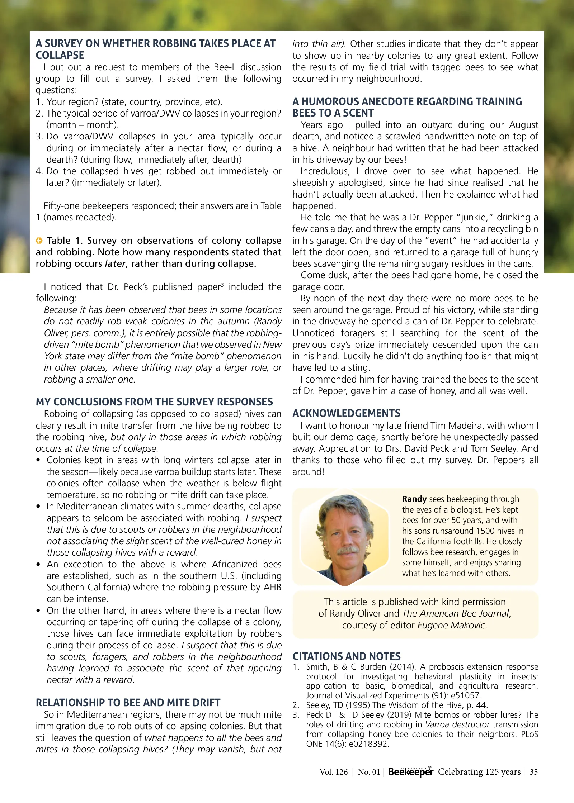

This article is published with kind permission
of Randy Oliver and The American Bee Journal,
courtesy of editor Eugene Makovic.
Randy sees beekeeping through
the eyes of a biologist. He’s kept
bees for over 50 years, and with
his sons runsaround 1500 hives in
the California foothills. He closely
follows bee research, engages in
some himself, and enjoys sharing
what he’s learned with others.
CITATIONS AND NOTES
1. Smith, B & C Burden (2014). A proboscis extension response
protocol for investigating behavioral plasticity in insects:
application to basic, biomedical, and agricultural research.
Journal of Visualized Experiments (91): e51057.
2. Seeley, TD (1995) The Wisdom of the Hive, p. 44.
3. Peck DT & TD Seeley (2019) Mite bombs or robber lures? The
roles of drifting and robbing in Varroa destructor transmission
from collapsing honey bee colonies to their neighbors. PLoS
ONE 14(6): e0218392.
A SURVEY ON WHETHER ROBBING TAKES PLACE AT
COLLAPSE
I put out a request to members of the Bee-L discussion
group to fill out a survey. I asked them the following
questions:
1. Your region? (state, country, province, etc).
2. The typical period of varroa/DWV collapses in your region?
(month – month).
3. Do varroa/DWV collapses in your area typically occur
during or immediately after a nectar flow, or during a
dearth? (during flow, immediately after, dearth)
4. Do the collapsed hives get robbed out immediately or
later? (immediately or later).
Fifty-one beekeepers responded; their answers are in Table
1 (names redacted).
I noticed that Dr. Peck’s published paper3 included the
following:
Because it has been observed that bees in some locations
do not readily rob weak colonies in the autumn (Randy
Oliver, pers. comm.), it is entirely possible that the robbing-
driven “mite bomb” phenomenon that we observed in New
York state may differ from the “mite bomb” phenomenon
in other places, where drifting may play a larger role, or
robbing a smaller one.
MY CONCLUSIONS FROM THE SURVEY RESPONSES
Robbing of collapsing (as opposed to collapsed) hives can
clearly result in mite transfer from the hive being robbed to
the robbing hive, but only in those areas in which robbing
occurs at the time of collapse.
• Colonies kept in areas with long winters collapse later in
the season—likely because varroa buildup starts later. These
colonies often collapse when the weather is below flight
temperature, so no robbing or mite drift can take place.
• In Mediterranean climates with summer dearths, collapse
appears to seldom be associated with robbing. I suspect
that this is due to scouts or robbers in the neighbourhood
not associating the slight scent of the well-cured honey in
those collapsing hives with a reward.
• An exception to the above is where Africanized bees
are established, such as in the southern U.S. (including
Southern California) where the robbing pressure by AHB
can be intense.
• On the other hand, in areas where there is a nectar flow
occurring or tapering off during the collapse of a colony,
those hives can face immediate exploitation by robbers
during their process of collapse. I suspect that this is due
to scouts, foragers, and robbers in the neighbourhood
having learned to associate the scent of that ripening
nectar with a reward.
RELATIONSHIP TO BEE AND MITE DRIFT
So in Mediterranean regions, there may not be much mite
immigration due to rob outs of collapsing colonies. But that
still leaves the question of what happens to all the bees and
mites in those collapsing hives? (They may vanish, but not
Table 1. Survey on observations of colony collapse
and robbing. Note how many respondents stated that
robbing occurs later, rather than during collapse.
into thin air). Other studies indicate that they don’t appear
to show up in nearby colonies to any great extent. Follow
the results of my field trial with tagged bees to see what
occurred in my neighbourhood.
A HUMOROUS ANECDOTE REGARDING TRAINING
BEES TO A SCENT
Years ago I pulled into an outyard during our August
dearth, and noticed a scrawled handwritten note on top of
a hive. A neighbour had written that he had been attacked
in his driveway by our bees!
Incredulous, I drove over to see what happened. He
sheepishly apologised, since he had since realised that he
hadn’t actually been attacked. Then he explained what had
happened.
He told me that he was a Dr. Pepper “junkie,” drinking a
few cans a day, and threw the empty cans into a recycling bin
in his garage. On the day of the “event” he had accidentally
left the door open, and returned to a garage full of hungry
bees scavenging the remaining sugary residues in the cans.
Come dusk, after the bees had gone home, he closed the
garage door.
By noon of the next day there were no more bees to be
seen around the garage. Proud of his victory, while standing
in the driveway he opened a can of Dr. Pepper to celebrate.
Unnoticed foragers still searching for the scent of the
previous day’s prize immediately descended upon the can
in his hand. Luckily he didn’t do anything foolish that might
have led to a sting.
I commended him for having trained the bees to the scent
of Dr. Pepper, gave him a case of honey, and all was well.
ACKNOWLEDGEMENTS
I want to honour my late friend Tim Madeira, with whom I
built our demo cage, shortly before he unexpectedly passed
away. Appreciation to Drs. David Peck and Tom Seeley. And
thanks to those who filled out my survey. Dr. Peppers all
around!
Vol. 126 | No. 01 |
Celebrating 125 years | 35